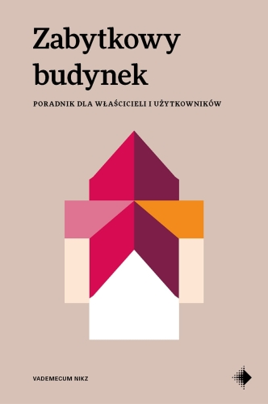
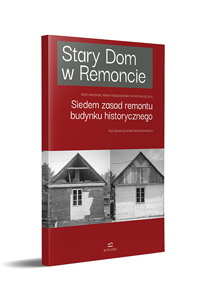
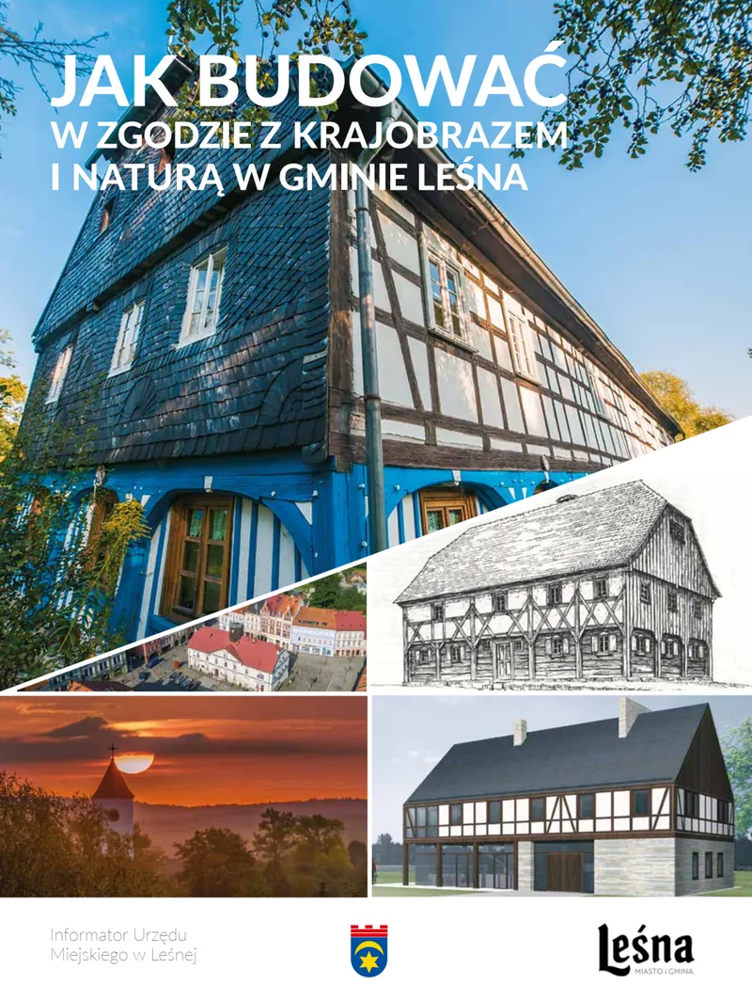

Zabytkowy budynek. Poradnik dla właścicieli i użytkowników
Katarzyna Sielicka
Strona główna/Wiedza
Zbieramy materiały, które pomagają rozpoznać problem, zadać właściwe pytania i uniknąć decyzji niszczących historyczny budynek.
Szukasz kogoś, kto naprawdę zna się na tradycyjnych materiałach i wie, jak pracować przy starych budynkach? Zebraliśmy w jednym miejscu rzemieślników oraz fachowców, którzy specjalizują się w remontach i ochronie zabytkowej architektury.
Wybrane publikacje pomocne właścicielom i opiekunom historycznych budynków.

Katarzyna Sielicka

Seria praktycznych poradników poświęconych remontom tradycyjnych budynków.
okładka i bezpośredni link do publikacji

Ważne: materiały edukacyjne nie zastępują indywidualnej opinii właściwego specjalisty. W sprawach dotyczących bezpieczeństwa konstrukcji, prawa, ochrony konserwatorskiej lub prac wymagających projektu należy korzystać z fachowej pomocy i właściwych procedur.